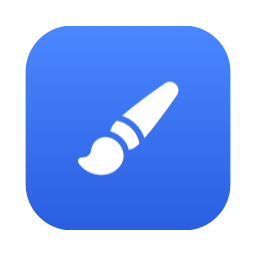

PadLink
Mac-Bildschirm und Stift auf dem Wacom MovinkPad Pro 14
Für den Mac
macOS 14 oder neuer
- Herunterladen und entpacken
- PadLink in Programme ziehen
- Einmal Rechtsklick → Öffnen, dann zwei Erlaubnisse geben
Für das Pad
Android, auf dem Pad öffnen
- Auf dem Pad herunterladen
- Datei antippen → Installieren
- PadLink öffnen, am Mac den großen Knopf drücken
Mit Kabel ist die Verzögerung am kleinsten: Pad per USB-C an den Mac, dann den Knopf drücken.
Ohne Kabel müssen Mac und Pad im gleichen WLAN sein.
Die Downloads sind privat – vorher bei GitHub anmelden.